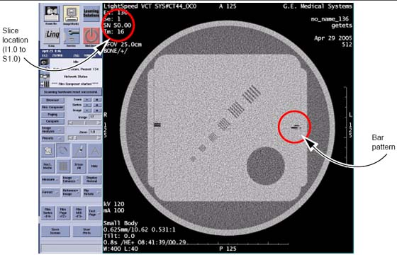

Operating Documentation
Direction 5193574-800, Rev# 22
LightSpeed 7.X Service Methods
Module Version 1.0, Version Date 4/22/10
Operating Documentation |
| Required Persons | Preliminary Reqs | Procedure | Finalization |
|---|---|---|---|
| 1 | Not Applicable | Not Applicable | Not Applicable |
Place the QA phantom on the phantom holder.
Turn ON the internal alignment lights, and drive the phantom into the gantry opening, until the line on the phantom lines up with the internal laser lights.
Verify that BOTH internal axial lasers line up along the line on the QA phantom. If not, check table/gantry, cradle, and/or laser alignment.
Center the phantom in the scan plane with the [CENTER PHANTOM] found in the [Scanner Utilities] on the left monitor in the lower right corner.
Click on [CONFIRM].
Adjust phantom as needed to achieve ± 0.5mm in both X and Y. Use [CONFIRM] to retry each time.
Click [DONE] and [QUIT] when centered.
Select [NEW PATIENT].
Select the service protocol, [MANUFACTURING, TOMO PLANE INDICATION]. The protocol should appear as shown in Table 1.
Table 1: Tomographic Plane Protocol
| Scan Type | Start Location | End Location | No. of Images | Thick Speed | Interval (mm) | Gantry Tilt | SFOV | kV | mA | Total Exposure Time | DFOV | Recon Type |
| Helical Full 0.8 sec | I3.000 | S3.200 | 32 | 0.625 10.62 0.531:1 | 0.200 | S0.0 | Small Body | 120 | 100 | 2.1 | 25.0 | Bone |
Select [IMAGE WORKS] and select Exam, Series, Image 1.
Click on [VIEWER].
Select [FORMAT] and choose single image format view.
Locate the scan plane indicator, the longest bar in the bar pattern on the right side of the phantom. The right side of the phantom corresponds to the side of the image labeled L on the display screen. See Illustration 1.
Illustration 1: Exam, Series, Image 1

On the GE Form e4879 Data Sheet, record the scan location (shown on the image annotation) of the image with the darkest scan plane indicator (darkest long bar).
If your system meets all the installation and alignment specifications, the image at scan location zero (S0.0) should contain the scan plane indicator. If scan location S1.0 or scan location I1.0 has the darkest bar, the system still meets the specification. The scan plane deviation should equal S0.0 +/- 1.0mm. If necessary, adjust the internal alignment light position to meet the S0.0 +/- 1.0mm requirement.
Repeat the Tomographic Plane Indication test with the external alignment lights.
Use the external alignment light, and press the external landmark.
Verify the external light lines up along the black line on both the left and right sides of the QA phantom.
The scan plane indication must fall within the S0.0 + 1.0mm specification.
Initial below.
No finalization steps.